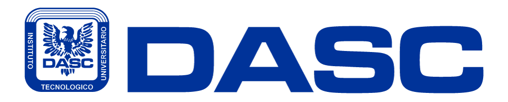

¿Para quién es?
Para aspirantes que están comparando carreras o necesitan una primera orientación antes de hablar con admisiones.

Test vocacional DASC
Responde preguntas breves sobre intereses, habilidades, contexto y forma de aprender. El resultado cruza tu perfil con la oferta DASC y te propone carrera, modalidad y siguientes pasos.
Este test no solo pregunta qué te gusta. También considera tu tiempo disponible, tu forma de aprender, tus barreras y la modalidad que podría ayudarte a sostener mejor tu avance.
Para aspirantes que están comparando carreras o necesitan una primera orientación antes de hablar con admisiones.
Una carrera sugerida, modalidad recomendada, estilo de aprendizaje, nivel de riesgo y opciones cercanas dentro de DASC.
No. El test funciona en la página y al final puedes decidir si quieres contactar a admisiones por WhatsApp.